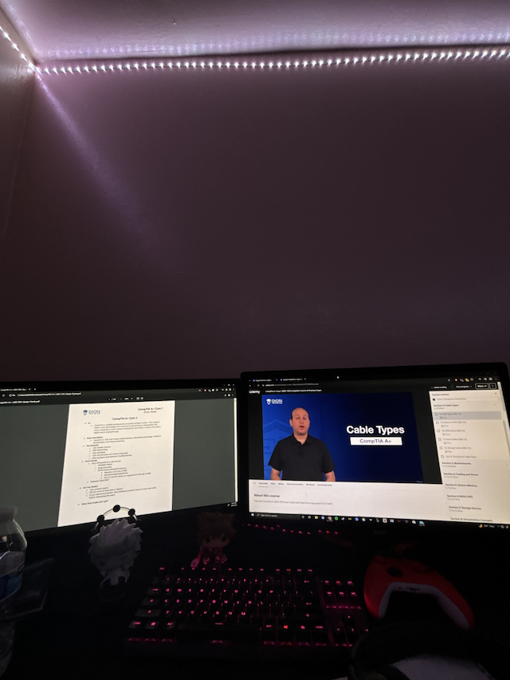

Jefferson Rodriguez
North Plainfield, NJ
Get to Know Me:
I would like to be well versed in many different aspects of information technology from hardware troubleshooting to network troubleshooting
My main goal in my studies is to learn as much as I can to the everchanging world of computers and networks and clouds and cybersecurity and be able to adapt to these changes as needed. I am in for a long journey of learning but it is exciting to think about
I never thought that coding would be as fun as it has been so far, but then again, we have not gotten to the nitty gritty yet so hopefully I hold onto this zeal.
I would like to start reading my percy jackson and the olympians books because I haven't yet, but school is taking up most of my time so that little hobby will definitely have to wait.
Hobbies:
- Playing video games (mainly multiplayer, competitive games)
- Read articles and watch videos about many different topics
- Look at computer parts (I like to take them apart and look inside)
- Nature walks
- Going out on drives
- Practicing guitar
Photo Gallery

